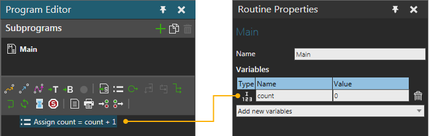

Process variables are local variables in a process specific to a routine. A variable in a routine can only be set and referred in the same routine. However, both process requirements and process routine statements of a routine can access the same variables.
See also Process Statement Expressions.
Static process routine variables and they created manually from the user interface and remain between simulation runs.

The value of a variable is reset to the default value of the data type on simulation reset and simulation start, but not for each process routine execution.
| Data type | Default value |
| Boolean | False |
| Integer | 0 |
| Real | 0.0 |
String |
"" |
Runtime variables are created by statements when the defined output variable doesn’t exist. This is a convenience feature so users don’t need to define all used variables beforehand. The runtime variables are reset to a default value before the process requirements evaluation, which means that process requirements can pass values to the process routine statements but the values are reset between each execution. All runtime variables are also deleted on simulation start and reset.
The runtime variables can contain references to objects such as Product instances and also contain a list of values, such as integers, or references to objects. References to objects and lists of references are also strongly typed, meaning that the referenced object type is known and cannot be changed or a reference to object of another type stored in the variable. Lists can only contain values of a single type or references to objects of a single type.
All references to objects are implemented such that if the referenced object is deleted, the reference becomes Null (“None” in Python). Null means that the reference points to nothing. If the reference is in a list, the Null value will remain in the list.